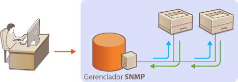
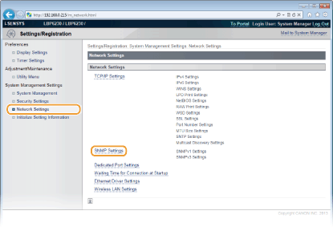
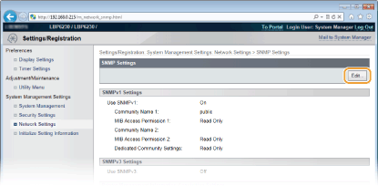
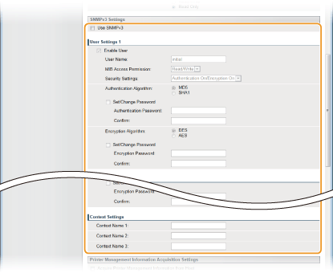

0KU8-02J
O Simple Network Management Protocol (SNMP) é um protocolo para monitorar e controlar os dispositivos de comunicação em uma rede usando um banco de dados de informações de gerenciamento (MIB). A impressora suporta o SNMPv1 o SNMPv3 com segurança aprimorada. Eles permitem verificar o status da impressora de um computador quando você imprime documentos ou usa o Remote UI. Você pode ativar o SNMPv1 ou o SNMPv3, ou ambos ao mesmo tempo. Especifique as definições para que cada versão seja compatível com seu ambiente de rede e a finalidade de uso.

SNMPv1
O SNMPv1 usa informações chamadas de "cadeia de comunidade" para definir o escopo da comunicação SNMP. Como essa informação está exposta à rede em texto sem formatação, sua rede estará vulnerável a ataques. Para garantir a segurança da rede, desative o SNMPv1 e use o SNMPv3.
SNMPv3
Com o SNMPv3, é possível implementar o gerenciamento de dispositivos de rede que é protegido por recursos de segurança robustos. Use o Remote UI para fazer as configurações. Antes de iniciar, ative o SSL (Ativando a comunicação criptografada SSL para o Remote UI).
 |
|
A impressora não suporta o recurso de interceptação de notificação do SNMP.
Para alterar os números de porta do protocolo SNMP Alterando os números de portas
O software de gerenciamento de SNMP permite configurar, monitorar e controlar a impressora remotamente a partir do computador onde o software está instalado. Para mais informações, consulte os manuais de instruções do seu software de gerenciamento.
|
1
Inicie o Remote UI e faça o logon no modo Administrador Sistema. Iniciando o Remote UI
2
Clique em [Settings/Registration].

3
Clique em [Network Settings]  [SNMP Settings].
[SNMP Settings].

4
Clique em [Edit].

5
Especifique as definições SNMPv1.
Se você não precisar especificar as configurações SNMPv1, prossiga para a etapa.

[Use SNMPv1]
Marque a caixa de seleção para ativar o SNMPv1. Você pode especificar o resto das definições SNMPv1 apenas quando essa caixa de seleção estiver marcada.
Marque a caixa de seleção para ativar o SNMPv1. Você pode especificar o resto das definições SNMPv1 apenas quando essa caixa de seleção estiver marcada.
[Community Name 1]/[Community Name 2]
Digite até 32 caracteres alfanuméricos para o nome da comunidade.
Digite até 32 caracteres alfanuméricos para o nome da comunidade.
[MIB Access Permission 1]/[MIB Access Permission 2]
Para cada comunidade, selecione [Read/Write] ou [Read Only] para os privilégios de acesso aos objetos MIB.
Para cada comunidade, selecione [Read/Write] ou [Read Only] para os privilégios de acesso aos objetos MIB.
|
[Read/Write]
|
Permite ambos, a visualização e a alteração de valores dos objetos MIB.
|
|
[Read Only]
|
Permite apenas a visualização de valores dos objetos MIB.
|
[Dedicated Community Settings]
A Comunidade Dedicada é uma comunidade pré-definida, destinada exclusivamente para administradores usando o software Canon, como o imageWARE Enterprise Management Console. Selecione [Off], [Read/Write] ou [Read Only] para os privilégios de acesso aos objetos MIB.
A Comunidade Dedicada é uma comunidade pré-definida, destinada exclusivamente para administradores usando o software Canon, como o imageWARE Enterprise Management Console. Selecione [Off], [Read/Write] ou [Read Only] para os privilégios de acesso aos objetos MIB.
|
[Off]
|
Não use a Comunidade Dedicada.
|
|
[Read/Write]
|
Permite à Comunidade Dedicada a visualização e a alteração de valores dos objetos MIB.
|
|
[Read Only]
|
Permite à Comunidade Dedicada apenas a visualização de objetos MIB.
|
6
Especifique as definições SNMPv3.
Se você não precisar especificar as configurações SNMPv3, prossiga para a etapa.

[Use SNMPv3]
Marque a caixa de seleção para ativar o SNMPv3. Você pode especificar o resto das definições SNMPv3 apenas quando essa caixa de seleção estiver marcada.
Marque a caixa de seleção para ativar o SNMPv3. Você pode especificar o resto das definições SNMPv3 apenas quando essa caixa de seleção estiver marcada.
[Enable User]
Marque a caixa de seleção para ativar [User Settings 1]/[User Settings 2]/[User Settings 3]. Para desativar as configurações do usuário, limpe a caixa de seleção correspondente.
Marque a caixa de seleção para ativar [User Settings 1]/[User Settings 2]/[User Settings 3]. Para desativar as configurações do usuário, limpe a caixa de seleção correspondente.
[User Name]
Digite até 32 caracteres alfanuméricos para o nome de usuário.
Digite até 32 caracteres alfanuméricos para o nome de usuário.
[MIB Access Permission]
Selecione [Read/Write] ou [Read Only] para os privilégios de acesso aos objetos MIB.
Selecione [Read/Write] ou [Read Only] para os privilégios de acesso aos objetos MIB.
|
[Read/Write]
|
Permite ambos, a visualização e a alteração de valores dos objetos MIB.
|
|
[Read Only]
|
Permite apenas a visualização de valores dos objetos MIB.
|
[Security Settings]
Selecione [Authentication On/Encryption On], [Authentication On/Encryption Off] ou [Authentication Off/Encryption Off] para a combinação desejada para as definições desejadas de autenticação e criptografia.
Selecione [Authentication On/Encryption On], [Authentication On/Encryption Off] ou [Authentication Off/Encryption Off] para a combinação desejada para as definições desejadas de autenticação e criptografia.
[Authentication Algorithm]
Quando [Security Settings] é definido como [Authentication On/Encryption On] ou [Authentication On/Encryption Off], selecione [MD5] ou [SHA1] como o algoritmo de autenticação, de acordo com o seu ambiente.
Quando [Security Settings] é definido como [Authentication On/Encryption On] ou [Authentication On/Encryption Off], selecione [MD5] ou [SHA1] como o algoritmo de autenticação, de acordo com o seu ambiente.
[Encryption Algorithm]
Quando [Security Settings] é definido como [Authentication On/Encryption On], selecione [DES] ou [AES] como o algoritmo de criptografia, de acordo com o seu ambiente.
Quando [Security Settings] é definido como [Authentication On/Encryption On], selecione [DES] ou [AES] como o algoritmo de criptografia, de acordo com o seu ambiente.
[Set/Change Password]
Para definir ou alterar a senha, marque a caixa de seleção e digite entre 6 e 16 caracteres alfanuméricos para a senha na caixa de texto [Authentication Password] ou [Encryption Password]. Para confirmação, digite a mesma senha na caixa de texto [Confirm]. As senhas podem ser definidas independentemente para os algoritmos de autenticação e criptografia.
Para definir ou alterar a senha, marque a caixa de seleção e digite entre 6 e 16 caracteres alfanuméricos para a senha na caixa de texto [Authentication Password] ou [Encryption Password]. Para confirmação, digite a mesma senha na caixa de texto [Confirm]. As senhas podem ser definidas independentemente para os algoritmos de autenticação e criptografia.
[Context Name 1]/[Context Name 2]/[Context Name 3]
Digite até 32 caracteres alfanuméricos para o nome do contexto. Até três nomes de contexto podem ser registrados.
Digite até 32 caracteres alfanuméricos para o nome do contexto. Até três nomes de contexto podem ser registrados.
7
Especifique as definições de aquisição das informações de gerenciamento da impressora.
Com o SNMP, as informações de gerenciamento da impressora, como os protocolos de impressão e portas da impressora, podem ser monitoradas e obtidas regularmente de um computador na rede.

[Acquire Printer Management Information from Host]
Marque a caixa de seleção para ativar o monitoramento das informações de gerenciamento da impressora da impressora através de SNMP. Para desativar o monitoramento das informações da impressoras, desmarque a caixa de seleção.
8
Clique em [OK].

9
Reinicie a impressora.
Desligue a impressora, espere pelo menos 10 segundos e ligue novamente.
 |
|
Desativando o SNMPv1 e o SNMPv3
Se ambas as versões do SNMP forem desativadas, algumas das funções da impressora ficam indisponíveis, como obter a informação da impressora através do driver de impressora.
|
|
Ativando ambos, SNMPv1 e SNMPv3
|
|
Se ambas as versões do SNMP forem ativadas, recomenda-se que a permissão do acesso ao MIB no SNMPv1 seja definida para [Read Only]. A permissão de acesso ao MIB pode ser definida independentemente no SNMPv1 e no SNMPv3 (e para cada usuário no SNMPv3). Selecionar [Read/Write] (permissão de acesso total) no SNMPv1 nega os recursos robustos de segurança que caracterizam o SNMPv3 dado que a maioria das definições da impressora podem ser controladas com o SNMPv1.
|